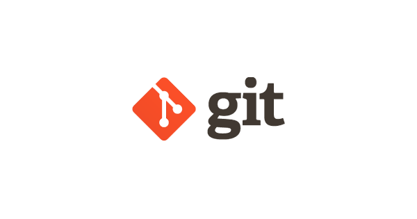
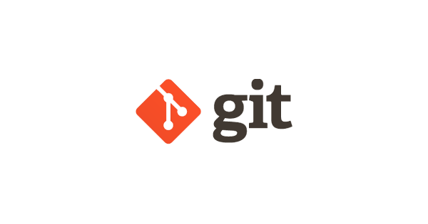

Présentation
Je suis Théo OGER, actuellement étudiant en BTS SIO (Services Informatiques aux Organisations), option SLAM (Solutions Logicielles et Applications Métiers).
Ce portfolio a été réalisé dans le cadre de mon diplôme. Je vous invite à l’explorer afin d’en découvrir davantage sur mon parcours, mes projets, mon travail de veille en cybersécurité et mes défis réalisés sur Root-Me.


 
